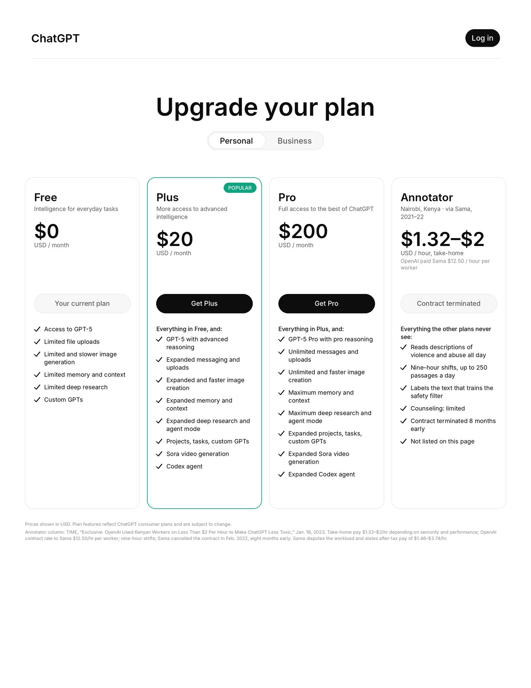
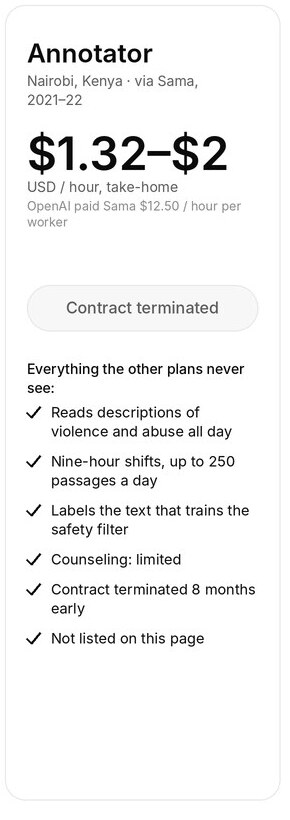
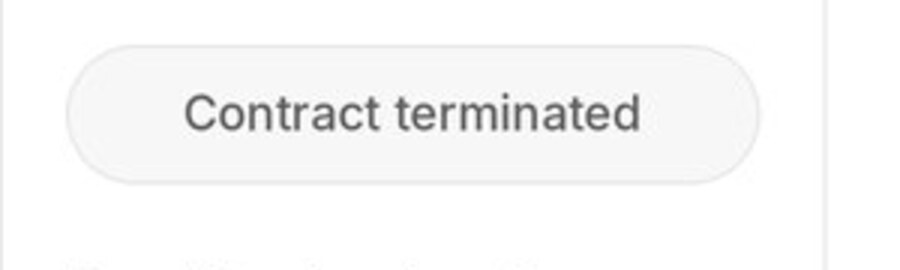
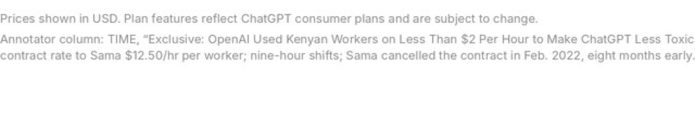
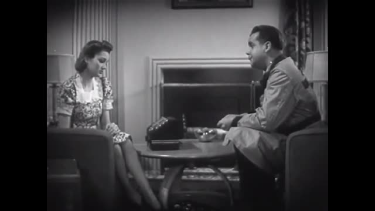
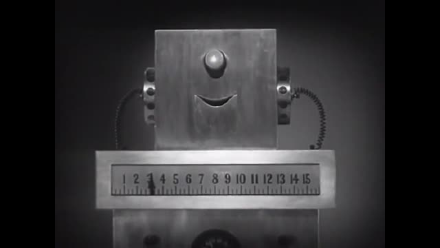
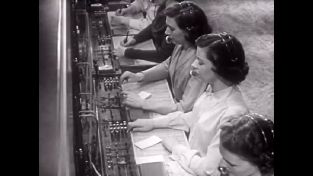
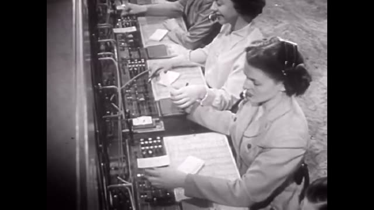
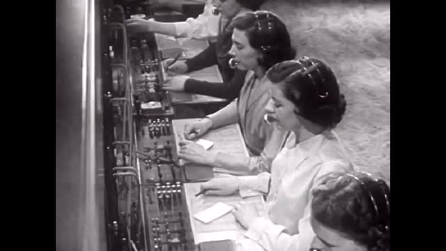
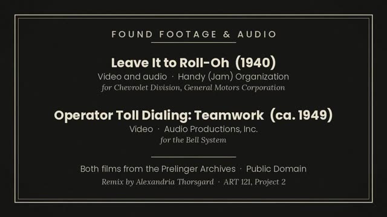

Push a button, and the work disappears.
Every ad for an “automatic” machine shows the user and never the worker. In Photoshop, in found footage, and soon on paper, this term's work puts the people back in the picture.
The work
The Fourth Column
Free, Plus and Pro rebuilt pixel for pixel, then a fourth column added in the same visual grammar: the Kenyan annotators who labeled the toxic content that made ChatGPT safe to ship, at under $2 an hour.
View the project →The 1940 pitch and the 2026 pitch are the same. Push a button and the work disappears. The work is about the people it disappears onto.
The Fourth Column
A ChatGPT pricing page with one plan OpenAI never advertised: the people who made it safe to use.




- Target
- OpenAI / ChatGPT advertising and the chatgpt.com pricing page
- Issue
- Hidden labor in AI safety: outsourced content moderation and data labeling
- Technique
- Format fidelity: reproduce the page, then turn its own symbols against it
- Tools
- Adobe Photoshop, 21 named layers; type, shape and smart-object layers
- Source
- Billy Perrigo, TIME, Jan. 18, 2023
OpenAI's advertising only ever shows one kind of person: the user. A farmer, a student, a parent, someone typing a question and getting a clean answer back. The ads are black and white and quiet, and the product looks like it runs on nothing. The Fourth Column is a culture jam of the one page where OpenAI does talk about cost, the ChatGPT pricing page, and it adds the column that page leaves out.
I rebuilt the Free, Plus and Pro plans in Photoshop as faithfully as I could, matching the type, the spacing, the green checkmarks and the grey “Your current plan” button. Then I added a fourth plan in exactly the same visual grammar: Annotator. Its features come from Billy Perrigo's January 2023 investigation for TIME, which found that OpenAI's contractor Sama paid workers in Kenya roughly $1.32 to $2 an hour after tax to read and label graphic descriptions of violence and abuse so the model could learn to filter them, in nine-hour shifts, under a contract Sama ended eight months early. OpenAI's contract rate to Sama was $12.50 an hour per worker. Sama's response, which disputes the workload and gives a higher pay range, is in the fine print, because the piece only works if every line is something the companies themselves have said or been reported to say.
The jam is the juxtaposition. A checkmark means “benefit” everywhere else on the page; in the fourth column the same mark sits beside a nine-hour shift. The disabled button that normally reads “Your current plan” reads “Contract terminated.” Nothing is exaggerated and nothing is invented. The page simply tells the whole price.
Research. Started with the ads, then the TIME reporting and the follow-up coverage, and wrote down every figure with its source before touching Photoshop.
Rebuild. Recreated the pricing page's three real columns at 300 ppi so the layout, type and color hold up at print size.
Jam. Added the Annotator column, reusing the checkmarks, badge and disabled button for the facts the ad leaves out.
Fine print. Put the citations and Sama's rebuttal where pricing pages keep their disclaimers, so the critique stays factual.
Leave It to the Machine
Two public-domain films, 1940 and 1949, arguing with each other about who actually does the work.






- Source 1
- Leave It to Roll-Oh, Handy (Jam) Organization for Chevrolet, 1940
- Source 2
- Operator Toll Dialing: Teamwork, Audio Productions for the Bell System, ca. 1949
- Techniques
- Mashup and Audio Swap
- Format
- 59 s, 1280 × 720, H.264, stereo. Both sources Prelinger Archives, public domain.
Leave It to the Machine is a mashup of two films from the Prelinger Archives: Leave It to Roll-Oh (Handy (Jam) Organization for Chevrolet, 1940), a World's Fair promo starring a “chromium-plated butler” who supposedly frees the housewife from every chore, and Operator Toll Dialing: Teamwork (Audio Productions, Inc. for the Bell System, ca. 1949), a training film for the telephone operators who made “automatic” long-distance calling feel effortless.
The remix uses two techniques: a Mashup, cutting between the robot's cheerful demonstrations and the operators' hands, headsets, and switchboards; and an Audio Swap, lifting the confident 1940 narration off the robot film and laying it over the operator footage. The narrator's promises of “mechanical servants that never ask for afternoons off,” “a robot that never sleeps,” and machines “leaving us free to live and work and play in greater ease and comfort” now describe rows of women doing exactly the invisible labor the robot was supposed to replace. The cuts get shorter and faster as the mismatch becomes obvious, then hold on the full switchboard room for the last line.
This continues the idea from my Project 1 Culture Jam, which critiqued the hidden human labor behind AI content moderation. The 1940 pitch and the 2026 pitch are the same: you just have to push a button, and the work disappears. The remix is about the people it disappears onto.
Find. Searched the Prelinger Archives for two films that would argue with each other: one that promises automation, one that shows the people behind it.
Scout. Pulled contact sheets from both films and logged the robot's demonstrations and the operators' hands and switchboards by timestamp.
Swap. Lifted the 1940 narration and laid it over the 1949 footage, placing each cut inside a pause in the voice so the lines stay intact.
Pace. Shortened the shots as the mismatch becomes obvious, held on the full room for the last line, and closed with period-style credits.
Artist Zine
The term's images, sources and process, folded into something you can hold.
Project 1 put the hidden labor on a pricing page. Project 2 put it under a narrator's voice. The zine puts it in your hands: the culture jam, stills from the remix, the research behind both, and new collage work built from the same archival sources. Images are being gathered now; the finished zine will be photographed and added here when it's done.
I study how people think. This term I studied what they're shown.
I'm a senior at Oregon State University studying psychology with a minor in UX research. I'm interested in how people think, decide and use technology, especially when systems don't account for the full range of human needs. ART 121 is where I've been turning that interest into images.
BasedNear Salem, Oregon. Grew up in a very small town in the state.
StudyingB.A. Psychology, minor in UX Research and Design, Oregon State University, anticipated 2027.
MakingDigital art and abstract landscapes, when not in class or at work.
As a Direct Support Professional at Joieful Connections, I spend my days supporting individuals with disabilities through daily living, community participation and person-centered care. That work shapes how I approach both UX and art: I pay attention to who a system is built for, and who it quietly expects to disappear.
I'm an Undergraduate Research Assistant in a psychology lab studying how AI-assisted learning shapes student outcomes, and in summer 2026 I worked as a safety intern at Granite Construction, reading incident reports end to end and presenting findings to regional leadership. Reading the whole record, not the summary, is a habit I carried straight into this studio.
In ART 121 that habit became the theme of the term. My culture jam rebuilds a ChatGPT pricing page and adds the plan the ad never shows. My video remix lets a 1940 narrator promise a labor-free future over footage of the people doing the labor. The zine will gather both, with their sources, into something you can hold.
Studio
PhotoshopLayers & masksClone / stampTypographyCollageVideo editingZine layoutConcept
Culture jammingAppropriationFound footageMashupAudio swapVisual critiqueResearch
Source verificationDocument analysisInterviewsUsability testingAffinity mappingSynthesisTools
Adobe PhotoshopAdobe IllustratorFigmaQualtricsArchive.orgExcelHave thoughts on the work? I read every comment.
Open to critique on any of the three projects, and to conversations about UX research, accessibility and the people behind “automatic” systems.